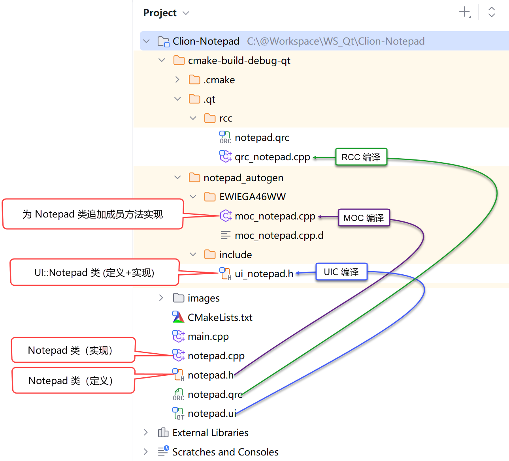

Qt 设计理念和运行原理

对于初次接触 Qt 的程序员来说，一个鲜明的感受是：写一个 Qt 程序不难，但要理解代码的底层编译和运行原理要困难很多。我认为对初学者来说，比较明智的学习规划是：开始阶段要对 Qt 的运行原理有一个大概的了解，但不要深究，等上手编写过一些应用以后再回过头深入地研究是比较好的策略。本文先就 Qt 的编译和运行原理作一些必要但不深入地介绍，目的是能初步理解一个 Qt 应用的整体运行逻辑。为了讲解起来更容易理解，我们使用官方的 Notepad 示例 《Getting Started Programming with Qt Widgets》 作为依托进行讲解。
首先，一个笼统却很重要的认知： Qt 在标准 C++ 的基础上进行了一些“扩展”，这使得基于 Qt 编写的部分源代码需要被 Qt “预先翻译”成标准 C++ 源文件，然后再进入标准 C++ 的编译流程。这里的“预先翻译”主要是指：UIC 编译、MOC 编译、RCC 编译 ，虽然它们被叫做“编译”，但它们并不生成 .obj 文件，而是生成标准 C++ 文件，所以，它们更像是“ 代码生成 器”。我们以 Notepad 这个项目为例，下图展示了项目中的一些重要源文件和它们被“编译”后的文件对应关系：

了解这些文件被处理的过程对理解 Qt 运行原理至关重要。我们下面就深入地介绍一下。以 Notepad 项目为例：当我们使用 Qt Creator 新建一个 Qt Widgets Application 类型的项目时，IDE 会帮我们自动生成如下基础文件：
-
应用程序入口文件：
main.cpp -
主窗口文件：
notepad.cpp -
主窗口文件的头文件：
notepad.h -
主窗口的UI设计/描述文件：
notepad.ui -
项目使用的资源文件：
notepad.qrc（非自动生成，在需要添加图片等资源文件时生成）